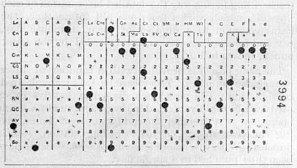

zero to site
Кто я?
- 10 лет жизни в web и IT
- Сертификат CIW Web Foundation Associate 1D0-510
- Автор переводов статей о Frontend-разработке для Frontender Magazine
- Инженер-системотехник GDC Services LLC
- Гик до мозго-костей и просто увлеченный человек
Что здесь будет
- История веба
- Много JavaScript, немного HTML и совсем чуть-чуть CSS
- Работа с командной строкой
- Современный Workflow
Чего здесь не будет
- Работы с базами данных
- Ruby, Java, PHP, Perl, Apache, Nginx
- Фреймворков (angularjs, backbonejs, jquery, express, Rails)
- MVC
Простой путь
- Wix.com
- weebly.com
- Еще 18
Сложный путь
Разминка
Немного истории
Табулятор Холлерита
1890

- RAM
- Жесткий диск
- Сеть
- Архив
- Интерфейс
Мэйнфреймы
Timesharing
Дуглас Энгельбарт
1968DemoКонец инноваций платформ
- На сегодня мы имеем небольшой набор архитектур CPU
- Intel (компьютеры)
- PowerPC (игровые консоли)
- ARM (мобильные)
- И еще меньше операционных систем
- Unix 70s
- Windows 80s
Начало инноваций в языках программирования
- FORTRAN (IF, DO, *), COBOL (english-like)
- BASIC (I/O, номера строк, работа со строками)
- Business BASIC (key-value)
- Microsoft BASIC
- Visual BASIC
- ALGOL 60 (блоки begin-end, goto-less) -> Pascal
- (FORTRAN+BCPL => B) + Pascal => C
- ALGOL -> Simula -> Smalltalk (объекты, первый UI (xerox))
- C -> Objective-C; Smalltalk -> Ruby
- Scheme (функции, методы, замыкания)
- С++, Java
HyperCard
- Стэк: содержит фоны и карточки
- Фон: картинка, кнопки и поля (!)
- Карточка: фон, кнопки и поля
- Кнопка: текст и/или картинка
- Поле: текст
Xanadu -> WWW
- Mosaic (img tag)
- Netscape Navigator (blink, cookies, script, интерактивность)
- Spyglass
- Internet Explorer
Java + Scheme + Self => LiveScript, JavaScript, ECMAScript
- 1999 ES3
- 2009 ES5 (default > strict)
История развития веб
Большой взрыв => Появление человека => Веб-технологии
История развития веб
От Web 1.0 до сегодняшних дней
ARPANET
Tim Berners-Lee
Технологии Web
- Web 1.0 - статические веб-сайты, первая бизнес-модель
- Первый коммерческий сайт - www.amazon.com
- В 1994 WWW выросла в 23 раза
- Web 2.0 - интерактивность (AJAX), социальные сети, гибридные приложения, распространение медиа, онлайн-коммерция, wiki.
- Web 3.0 - "Интеллектуальный" веб, машинная переработка для понимания информации, семантический веб, NLP, машинное обучение/принятие решений, системы рекомендаций, Big Data.
Посмотреть как выглядели сайты тогда можно на сайте http://www.404pagefound.com/
Настоящее и будущее Frontend
Развитие frontend-разработки на примере YahooPros and cons
Преимущества:
- Повсеместность и удобство использования браузеров
- Следовательно, кросплатформенность
- Поддержка и обновление приложения без установки
- Уменьшение стоимости IT
Недостатки:
- UX не так хорош как в обычных приложениях (уже не так)
- Приватность и безопасность данных под угрозой
- С точки зрения разработки - трудно разрабатывать и искать ошибки - слишком много меняющихся вещей
Архитектура Web 1.0
- В основном статические страницы
- Нет разделения между данными и представлениями
- Браузеры примитивны
- 100 000 сайтов, 50 000 000 пользователей
- Содержимое сайтов генерировали сами создатели
Web 1.0 = Read-Only Web
Архитектура Web 2.0 и Web 3.0
- Серверная и клиентская части более функциональны
- Браузеры стали лучше поддерживать стандарты
- Web 2.0: 1e8 сайтов, 1e9 пользователей
- Содержимое сайтов генерирует часть пользователей
- Web 3.0: 1e9 сайтов, 2.5e9 пользователей
- "Интеллектуальный" веб
Javascript
{}
- прочитать:
- записать:
- удалить:
object.name
object[expression]
object.name = value
object[name] = value
delete object.name
delete object[name]
Свойство
Свойство это именованная коллекция аттрибутов
Новое в ES5
- enumerable, configurable
- get, set(value)
- Object.defineProperty(obj, key, descriptor)
- Object.defineProperties(obj, obj_descriptors)
- Object.getOwnPropertyDescriptor(obj, key)
- Object.getOwnProperties(obj)
- Object.keys(obj)
Классы и прототипы
Объекты могут наследоваться от любых объектов, вы можете кастомизировать новые объекты.
У объектов есть аттрибут prototype.
- prototype: object или null
- Object.create(object, properties)
- Object.getPrototypeOf(obj)
- __proto__ - изобретение Mozilla
Numbers
64-бит float
IEEE-754 (aka Double)
Number literals
- .01024e4
- 1.024e+3
- 10.24E2
- 102.4E+1
- 1024.00
- 1024
a = 0.1;
b = 0.2;
c = 0.3;
(a + b) + c === a + (b + c);
false
Number methods
- toExponential
- toFixed
- toLocaleString
- toPrecision
- toString
- valueOf
if (!Number.prototype.trunc) {
Number.prototype.trunc =
function trunc(number) {
return Math[
number >= 0 ?
'floor' : 'ceil'
](number);
};
}
Math
- abs
- acos
- asin
- atan
- atan2
- ceil
- cos
- exp
- floor
- log
- max
- min
- pow
- random
- round
- sin
- sqrt
- tan
Math
- E
- LN10
- LN2
- LOG10E
- LOG2E
- PI
- SQRT1_2
- SQRT2
function log2(x) {
return Math.LOG2E *
Math.log(x);
}
NaN
- Специальное число - не число
- Результат ошибочных операций
- Токсично: любая операция с NaN вернет NaN
- NaN ничему не равно, даже себе
- NaN === NaN => false
- NaN !== NaN => true
- isNaN(NaN) => true
Boolean
true
false
String
String
- Последовательность из 0 или более 16-битного юникода
- На самом деле UCS-2, не совсем UTF-16
- Суррогатные пары не работают
- Нет отдельного типа - символ. Символ - это строка длины 1.
- Строки иммутабельны (заморожены)
- Одинаковые строки эквивалентны (===)
- Строковый литерал - одинарные или двойные кавычки с \-экранированием
Мультистроковые литералы
var long_line_1 = "This is a \
long line"; // ok
var long_line_2 = "This is a \
long line"; // syntax error
Перевод чисел в строки
str = num.toString(0);
str = String(num);
Перевод строк в числа
num = Number(str);
num = +str;
num = parseInt(str);
parseInt(str, 10)
- Конвертирует значение в число
- Останавливается на первом нечисловом значении
- parseInt("12px") === 12
- Всегда указывайте систему счисления (10)
- parseInt("08") === 0
- parseInt("08", 10) === 8
Длина строки
string.length
Методы String
- charAt
- charCodeAt
- compareLocale
- concat
- indexOf
- lastIndexOf
- localeCompare
- match
- replace
- search
- slice
- split
- substring
- toLocaleLowerCase
- toLocaleUpperCase
- toLowerCase
- toString
- toUpperCase
- trim (es5)
- valueOf
trim
if (typeof String.prototype.trim !== 'function') {
String.prototype.trim = function() {
return this.replace(/^\s+|\s+$/g, '');
}
}
supplant
if (typeof String.prototype.supplant !== 'function') {
String.prototype.supplant = function (o) {
return this.replace(
/{([^{}]*)}/g,
function (a, b) {
var r = o[b];
return typeof r === 'string' ||
typeof r === 'number' ?
r : a;
});
};
}
Array
Array
- Массивы наследуются от объекта
- Индексы - строковые, используются как ключи
- Эффективно для разряженных масивов
- Неффективно во всех других случаев
- Преимущество: не нужно указывать размер массива при создании
length
- В отличие от объектов у массивов есть длина
- Это значение на 1 больше последнего значимого индекса
- Это позволяет использовать традиционный for:
for (var i = 0; i < a.length; i += 1) { ... } - Не стоит использовать for in с массивами
Литералы массивов
- []
- Может содержать любое количество выражений, разделенных запятыми:
myList = ['cats', 'peas', 'beans']; - Можно добавлять новые значения:
myList[myList.length] = 'barley';
Методы массивов
- concat
- every
- filter
- forEach
- indexOf
- join
- lastIndexOf
- map
- pop
- push
- reduce
- reduceRigth
- reverse
- shift
- slice
- some
- splice
- toLocaleString
- toString
- unshift
sort
var n = [4, 8, 15, 16, 23, 42];
n.sort() // => [15, 16, 23, 4, 42, 8];
Удаление элементов
delete array[number]
Удаляет элемент, но оставляет дыру в нумерации
array.splice(number, 1)
Удаляет элемент и сдвигает следующие за ним
Пример
myArray = ['a', 'b', 'c', 'd'];
delete myArray[1]; // ['a', undefined, 'c', 'd']
myArray.splice(1, 1); // ['a', 'c', 'd']
Массивы vs Объекты
- Используйте объекты когда нужны именованные свойства
- Используйте массивы когда вам нужна упорядоченность элементов
- Здесь нет ассоциативных массивов, вместо них - объекты
Date
RegExp
[a-z0-9!#$%&'*+/=?^_`{|}~-]+(?:\.[a-z0-9!#$%&'*+/=?^_`{|}~-]+)*@(?:[a-z0-9](?:[a-z0-9-]*[a-z0-9])?\.)+[a-z0-9](?:[a-z0-9-]*[a-z0-9])?
Функции
Лучшая и сложная часть языка, поговорим о них немного позже
null
undefined
typeof
| Тип | typeof |
| object | 'object' |
| function | 'function' |
| array | 'object' |
| number | 'number' |
| string | 'string' |
| boolean | 'boolean' |
| null | 'object' |
| undefined | 'undefined' |
Правда и кривда
Falsy
- false
- null
- undefined
- ""
- 0
- NaN
Все остальное - Truthy
"0", "false", [], {}
Любой тип данных может быть передан переменной, отправлен параметром в функцию или быть значением в объекте.
Копирование объектов
- Объекты могут быть переданы функции и могут быть возвращены функцией
- Объекты передаются по ссылке
- Объекты не передаются по значению
- === сравнивает ссылки на объект, но не объекты
C
Синтаксически JavaScript близок к семейству C. Разница в системе типов данных, в которой функции могут быть значениями.
Идентификаторы
- Начинаются с буквы, _ или $
- Далее 0 или более букв, _ или $
- По соглашению, все переменные, параметры, имена функций начинаются с маленькой буквы
- Кроме конструкторов - они начинаются с заглавной
- Начальная _ - зарезервирована для скрытых реализаций
- $ - кодогенераторы
+
- Результат зависит от типа - сложение, конкатенация
- Если оба оператора - числа, складывает
- Если нет - переводит все в строки и склеивает
унарный +
+"42" + (+"42") === 84
/
- Деление двух целых может давать нецелое
10 / 3 = 3.3333333333333335
10 / 0 = Infinity
%
- Остаток от деления
-1 % 8 // -1, не 7
==, !=
- Равно и не равно
- Возможны межтипные сравнения
- Всегда лучше использовать === и !==
Примеры
- '' == '0' // false
- 0 == '' // true
- 0 == '0' // true
- false == 'false' // false
- false == '0' // true
- false == undefined // false
- false == null // false
- null == undefined // true
- ' \t\r\n' == 0 // true
Откуда взялось ===
| FORTRAN | L = P .EQ. Q |
| ALGOL 60 | L := P = Q |
| BASIC | LET L = P = Q |
| JavaScript | l = p === q |
&&
- Логическое И
- Если первое выражение truthy, результат - второй оператор, иначе - первый.
// чтобы избежать ссылки на null
if (a) {
return a.number;
} else {
return a;
}
// может быть перезаписано как
return a && a.number
||
- Оператор "по умолчанию", логическое ИЛИ
var last = input || nr_items; - Если первое - правда, тогда результат первый оператор, если нет - второй
!
- логическое НЕ
- если операнд truthy, результат - false, иначе - true
- !! - порождает Boolean
Побитовые операторы
& | ^ >> >>> <<
- Побитовые операторы конвертируют операнды в 32-битное целое число и возвращают результат в виде 64-битного float
Выражения
- expression
- if
- switch
- while
- do
- for
- break
- continue
- return
- try/throw
Break
loop: for (;;) {
...
if (...) {
break loop;
}
...
}
For
for (i = 0; i < array.length; i += 1) {
// array[i] - текущий элемент массива для каждой итерации
}
For in
for (name in object) {
if (object.hasOwnProperty(name)) {
// name - это ключ объекта
// object[name] - текущее значение
}
}
Switch
- Многомерный if
- Значение может быть строкой
- В case могут быть выражения
- Осторожно: выражения "падают" через последующие case пока не встретят break
Switch
switch (expression) {
case ';':
case ',':
case '.':
punctuation();
break;
default:
noneOfTheAbove();
}
Throw
throw new Error(reasons);
throw {
name: exceptionName,
message: reason
};
Try/catch
try {
...
} catch (e) {
switch (e.name) {
case 'Error':
...
break;
default:
throw e;
}
}
With - не используйте это
with (o) {
foo = coda;
}
o.foo = coda;
o.foo = o.coda;
foo = coda;
foo = o.coda;
Функции
Определение функции
- function
- опционально - имя
- 0 или более параметров разделенных запятой в ()
- Тело функции {}
Определение функции
- Создается новый экземпляр объекта Function
- Функция может быть передана параметром функции, храниться в переменной, объекте или массиве
- В функциях есть методы и они могут наследоваться от других объектов через Function.prototype
var
- Декларирует и инициализирует переменную внутри функции
- Тип не указывается
- Переменная, созданная внутри функции видна везде внутри этой функции
Два варианта определения функции
function foo() {
...
}
var foo = function foo() {
...
}
Scope
В JS нет блочной области видимости, только функции.
return
return expression;
return; // undefined, кроме конструкторов (this)
arguments, this
- arguments - специальный параметр, содержащий переданные аргументы
- Это псевдо-массив и не содержит методов массива (в es5 - содержит)
- arguments.length
- this - содержит ссылку на объект вызова
- this - позволяет методу знать из какого объекта он запущен
- this - ключевая вещь в прототипном наследовании
Вызов функции
- Если аргументов много - лишние игнорируются
- Если мало - недостающие = undefined
- Нет проверки типов
4 формы вызова
- как функция
functionObject(arguments); - как метод
thisObject.methodName(arguments); thisObject["methodName"](arguments); - конструктор
thisObject.methodName(arguments); thisObject["methodName"](arguments); - Apply
functionObject.apply(thisObject, [arguments]);
Стэк
++
--
Замыкания
var digit_names = (function() {
var names = ['zero', 'one', 'two', 'three', 'four', 'five', 'six', 'seven', 'eight', 'nine'];
return function(n) {
return names[n];
}
})();
digit_names(3); // three
Этапы создания приложения
- Описание проблемы
- Определение требований
- Разработка архитектуры
Среда разработки
- Браузер Google Chrome
- Текстовый редактор с подсветкой синтаксиса и расширениями (Sublime Text 2)
- Командная строка + nodejs
- Система контроля версий Git
- Утилиты для работы с структурой файлов и системы сборки (grunt, bower, yeoman)
Установка node.js, npm, git, grunt
- nodejs.org/download
- git-scm.com/download
- $ npm install -g grunt-cli
package.json
- $ npm init
- $ npm install grunt --save-dev
- $ npm install grunt-contrib-watch --save-dev
- npm install express --save
Gruntfile.js
- Grunt - менеджер задач
- Есть множество дополнительных модулей под разные зедачи - сборка, минификация, проверка на ошибки
- Мы воспользуемся двумя модулями - connect для создания сервера и watch для автоматической перезагрузки страницы при сохранении
Файловая структура проекта
.
|-- Gruntfile.js
|-- package.json
|-- app.js
|-- secret.json
|-- index.html
|-- data.json
|-- dev
| `-- js
|-- public
|-- js
|-- lowres
`-- thumbs
Полезные ресурсы
- [developer.mozilla.org](https://developer.mozilla.org/en-US/docs/Web)
- [kalinon7@gmail.com](mailto:kalinon7@gmail.com)
- [@argentumus](http://twitter.com/argentumus)
- http://github.com/amIwho/